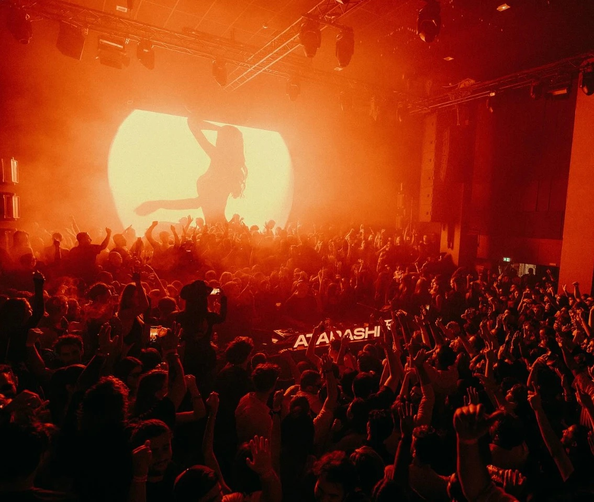

Night Square · direction B · stories club, ce soir, cette semaine
Club & agenda
Trois domaines de plus, aucun nouveau look. Les gabarits H, F, T et B de b-final et b-produit font l'essentiel ; deux gabarits s'ajoutent pour ce qu'une photo ne sait pas dire : A, une grille d'agenda, et S, un plan de salle. Le bandeau ivoire ne bouge pas.
- A · agenda. Une grille typo sur nuit, posée sur le bandeau (bas à 106 cqw). Une ligne par soirée : date en Anybody 900, event en capitales, club en Martian Mono. Filets voile, 5 lignes au plus, pas d'image.
- S · salle. Un plan 2D vu de dessus, à plat, au trait voile : cabine, piste, bar, entrée, tables numérotées. Table prise : tabac. Table libre : ambre, c'est la seule touche. Ni perspective, ni ombre.
- Le bandeau dit le message quand l'image est un plan ou une grille (« Plus que 2 tables », « Cette semaine ») ; il nomme le club ou l'event quand l'image est une photo ou un flyer.
- Ce soir, trois temps, un compte qui baisse : 4 tables le matin, 2 à l'ouverture, 1 à la fin. Seule la dernière perd le sticker lien et prend le bouton ambre « Réponds TABLE », comme la story H de
b-final. - Pas de photo de club vide : en attendant celle du club, la foule en N&B
#bp-nb, recadrée sans le nom d'un autre event. Les flyers restent entiers. - Récap sobre. Pas de chiffres de fréquentation, pas de « record » : une photo, une phrase, le rendez-vous suivant.
01
Club
Un club partenaire en quatre taps : le lieu (H), les tables (S), les soirs (A), les infos (B). Le bandeau porte le nom du club sur trois stories sur quatre ; sur le plan, il porte l'urgence.

Ici, la
nuit prend
son temps.
Gate
Club
H · lieu · le club
- Quand
- Première story d'un nouveau partenaire, puis une fois par mois. L'ambiance en une phrase, posée sur le bandeau.
- Fournir
- À demander au club : une photo de salle pleine, verticale, prise depuis la cabine ou le balcon, sans logo d'event. Ici, la foule Atarashi en attente, zoom ×1,96, recadrée pour cacher le nom.
Plus que
2 tables
S · plan · les tables
- Quand
- Mercredi ou jeudi avant un samedi qui se remplit. Le plan prouve le « plus que » : on voit ce qui est pris.
- Fournir
- Le plan réel du club (cabine, bar, entrée, numéros de tables) et l'état des tables pour la date. Ambre sur les libres uniquement.
Ouvert
23:30 → 06:00
Jeu
Résidence
NOM ARTISTE
Ven
Invités
Collectifs partenaires
Sam
Résidence
NOM ARTISTE
Gate
Club
A · jours · les soirs d'ouverture
- Quand
- Avec la story du club, ou en début de saison. Les jours se lisent avant les noms.
- Fournir
- Les soirs d'ouverture, l'horaire, le résident ou le format de chaque soir. Noms d'artistes validés par le club.
23:30
Ouverture des portes
Dress code
Soigné, sombre. Pas de sportswear.
Adresse
2 pl. de la Porte Maillot, 17e
Métro
Porte Maillot · ligne 1
Entrée
18 ans, pièce d'identité
Gate
Club
B · chiffre + liste · infos pratiques
- Quand
- À la fin de la série club, et le jour J pour ceux qui ont réservé. Elle répond aux trois questions qu'on reçoit en DM.
- Fournir
- L'heure d'ouverture, le dress code en une phrase, l'adresse, le métro, l'âge minimum. Quatre lignes au plus.
02
Ce soir
Le jour même, posté vite. Trois stories, un compte qui baisse : 4 tables le matin (F), 2 à l'ouverture (H), la dernière en fin de soirée (T). Même bandeau que la story H « Atarashi ce soir ».
Ce soir.
4 tables.

Atarashi
Paris
Matin → porte → fin
F · ce soir · le compte
- Quand
- Entre 11 h et 17 h, le jour J. La F de l'event, la date géante remplacée par « Ce soir » et le compte des tables.
- Fournir
- Le nombre de tables restantes au moment de poster. Le flyer et l'aplat sont ceux de la F déjà publiée.
Atarashi
ça ouvre
Matin → porte → fin
H · en direct · depuis le club
- Quand
- Dans la demi-heure qui suit l'ouverture, depuis la salle. Le lien est encore là : on peut réserver dans l'app.
- Fournir
- Une photo de salle prise sur place, horizontale ou verticale, foule de dos ou cabine. Zoom ×1,52.
1
Dernière
table.
Atarashi
ce soir
Matin → porte → fin
T · chiffre · dernière chance
- Quand
- Quand il reste une table, même tard. Pas de sticker lien : le bouton ambre, la réservation se fait en DM.
- Fournir
- Rien d'autre que le chiffre. Quelqu'un doit répondre aux DM dans les 10 minutes.
03
Cette semaine
L'agenda en A le lundi, le week-end en deux flyers le jeudi, la semaine passée en H le lundi suivant. Une soirée par ligne, lisible en trois secondes.
Jeu.
19
Résidence
NOM ARTISTE · Gate Club
Ven.
20
Bâzâr by Sasson
Gate Club
Sam.
21
Atarashi Paris
Yoyo · Palais de Tokyo
Dim.
22
Closing
NOM ARTISTE · Gate Club
Cette
semaine
A · agenda · la semaine
- Quand
- Le lundi en fin de matinée. On la repartage le mercredi si l'agenda bouge.
- Fournir
- 3 à 5 soirées : jour, date, nom de l'event (18 signes au plus), club. Pas d'image, pas d'ambre.

Ven.
20
Gate Club
Sam.
21
Yoyo
Ce
week-end
F double · le week-end
- Quand
- Le jeudi midi. Deux soirées, pas trois : au-delà, c'est l'agenda.
- Fournir
- Deux flyers paysage, entiers. Deux couleurs dominantes qui se battent : le fond reste nuit.
Merci
d'être là.
On remet ça.
Semaine
dernière
H · récap · le lundi
- Quand
- Le lundi matin, avant l'agenda. Une seule soirée, la plus forte de la semaine. Aucun chiffre.
- Fournir
- La meilleure photo de foule de la semaine (crédit photographe en légende Instagram), une phrase, la date suivante.